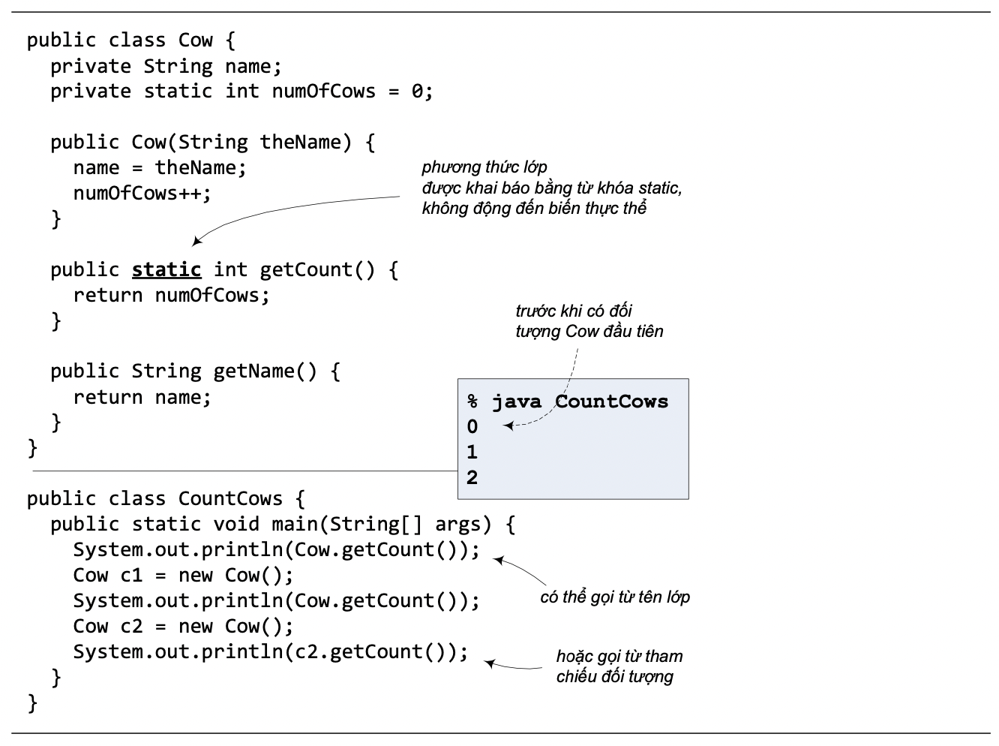

Lại xét ví dụ trong Hình 10.1, giả sử ta muốn numOfCows là biến private để không cho phép ai đó sửa từ bên ngoài lớp Cow. Nhưng ta vẫn muốn cho phép đọc giá trị của biến này từ bên ngoài (các chương trình dùng đến Cow có thể muốn biết có bao nhiêu đối tượng Cow đã được tạo), nên ta sẽ bổ sung một phương thức, chẳng hạn getCount(), để trả về giá trị của biến đó.
public int getCount() {
return numOfCows;
}
Như các phương thức mà ta đã quen dùng, để gọi getCount(), người ta sẽ cần đến một tham chiếu kiểu Cow và kích hoạt phương thức đó cho một đối tượng Cow. Cần đến một con bò để biết được có tất cả bao nhiêu con bò? Nghe có vẻ không được tự nhiên lắm. Vả lại, gọi getCount() từ bất cứ đối tượng Cow nào thực ra cũng như nhau cả, vì getCount() không dùng đến một đặc điểm hay dữ liệu đặc thù nào của mỗi đối tượng Cow (nó không truy nhập biến thực thể nào). Hơn nữa, khi còn chưa có một đối tượng Cow nào được tạo thì không thể gọi được getCount()!
Phương thức getCount() không nên bị phụ thuộc vào các đối tượng Cow cụ thể như vậy. Để giải quyết vấn đề này, ta có thể cho getCount() làm một phương thức của lớp (class method), thường gọi tắt là phương thức lớp – hay phương thức static - để nó có thể tồn tại độc lập với các đối tượng và có thể được gọi thẳng từ lớp mà không cần đến một tham chiếu đối tượng nào. Ta dùng từ khóa static khi khai báo phương thức lớp:
public static int getCount() {
return numOfCows;
}
Các phương thức thông thường mà ta đã biết, ngoại trừ main(), được gọi là các phương thức của thực thể (instance method) – hay các phương thức không static. Các phương thức này phụ thuộc vào từng đối tượng và phải được gọi từ đối tượng.
Hình 10.2 là bản sửa đổi của ví dụ trong Hình 10.1. Trong đó bổ sung phương thức static getCount() và trình diễn việc gọi phương thức đó từ tên lớp cũng như từ tham chiếu đối tượng. Lần này, ta có thể truy vấn số lượng Cow ngay từ khi chưa có đối tượng Cow nào được tạo. Lưu ý rằng có thể gọi getCount() từ tên lớp cũng như từ một tham chiếu kiểu Cow.
Hình 10.2. Phương thức lớp.
Đặc điểm độc lập đối với các đối tượng của phương thức static chính là lí do ta đã luôn luôn phải khai báo phương thức main() với từ khóa static. main() được kích hoạt để khởi động chương trình - khi chưa có bất cứ đối tượng nào được tạo – nên nó phải được phép chạy mà không gắn với bất cứ đối tượng nào.